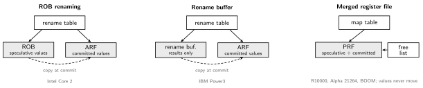
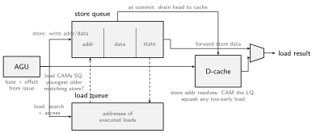

Out-of-order (OOO) execution runs ready instructions around stalled ones while retiring architectural state in program order. It exploits independent work; it cannot remove true dependencies or violate the ISA memory model.
| Hazard | Pattern | Nature |
|---|---|---|
| RAW (true) | add x1,... then sub ...,x1 |
real dataflow; scheduling must preserve the required value |
| WAR (anti) | sub ...,x1,... then add x1,... |
false: a name is reused |
| WAW (output) | add x1,... then mul x1,... |
false: same |
WAR/WAW exist only because the ISA has finitely many register names; the compiler must reuse them. The dataflow limit (execute every instruction as soon as its true operands are ready) is the theoretical speed of a program; eliminating false dependencies is how hardware approaches it.
Scoreboarding (CDC 6600, 1964) supported out-of-order execution with in-order issue: a central table tracks which units and registers are busy, stalling issue on WAW and delaying writeback on WAR because values live in the architectural registers.
Renaming removes false dependencies by giving every instruction’s destination a fresh physical register from a free list, and mapping architectural names through a rename map table. Physical registers outnumber architectural (e.g. 200+ vs 32) to name all in-flight values.
| Program (arch regs) | After rename | Dependency removed |
|---|---|---|
ld x1, 0(x2) |
ld p7, 0(p2) |
|
add x3, x1, x4 |
add p8, p7, p4 |
RAW on x1 kept (p7) |
sub x1, x5, x6 |
sub p9, p5, p6 |
WAW on x1 removed; can run when operands and unit are ready |
or x7, x1, x3 |
or p10, p9, p8 |
reads the new x1 (p9), correct |
The sub no longer waits for the load: same registers, no
conflict. Map after: x1→p9, x3→p8, x7→p10. A physical register is freed
when the next writer of the same architectural register commits
(no one can still read the old value).
The IBM 360/91 FPU (1967) invented distributed renaming three years after the scoreboard:
Tags remove WAR/WAW name dependencies. Modern issue queues may retain operand values or only physical-register tags; operand storage and renaming organization are separate choices.
Three answers shipped, each defining where speculative and committed values sit:

| ROB renaming | Rename buffer | Merged register file | |
|---|---|---|---|
| speculative values | in the ROB entry | separate result buffer | one physical register file |
| committed values | architectural RF | architectural RF | the same physical file |
| allocation | FIFO with the ROB, no free list | FIFO, no free list | explicit free list |
| at commit | copy value ROB→ARF | copy buffer→ARF | update map; value never moves |
| used by | Intel P6-family designs | IBM Power3 | MIPS R10000, Alpha 21264; common in later OOO designs |
ROB/value-buffer schemes copy results into the architectural register file at commit. A merged physical register file keeps values in place and updates mappings.
Freeing registers: when an instruction commits, free the stale physical mapping it replaced. Older readers have completed and future instructions use the new mapping. On a squash, recover the rename map and reclaim wrong-path allocations. Checkpoints, allocation lists, or ROB rollback implement this bookkeeping.
Pure Tomasulo updates registers as results appear, out of order, which wrecks precise exceptions and makes misspeculation unrecoverable. The fix separates execution order from commit order.
The reorder buffer (ROB) is a circular buffer allocated per instruction at dispatch, in program order:
The modern OOO pipeline end to end:
The instruction window is limited jointly by ROB, issue queue, physical registers, and load/store queues. A larger window exposes more independent work but increases area, energy, and recovery cost.
Registers rename cleanly; memory does not, because addresses are
computed at runtime: does ld 0(x5) depend on the older
sd 0(x3)? Unknown until both addresses resolve.

Both queues are allocated in program order at dispatch, so “older”
and “younger” are just queue positions. The AGU computes
base + offset at issue; a store fills its entry’s address
and data fields separately, since the two operands can become
ready in different cycles (which is why many cores crack a store into an
address µop and a data µop). A load does two things in the same cycle:
index the D-cache and CAM the store queue, with a priority pick of the
youngest older matching store; the mux takes forwarded
store data over cache data on a hit. Simple forwarding requires full
byte coverage by one store. Partial overlaps need merging from multiple
sources or a stall/replay. Stores drain from the queue head into the
D-cache only after commit, and the load queue exists for the reverse
check: when an older store’s address finally resolves, it CAMs the
executed loads to catch any that ran too early.
An aggressive LSU may access the cache before all older stores resolve. It must detect conflicting older stores, replay affected loads, and preserve the required ordering before retirement.
Load reordering between cores is architecturally visible; what the ISA permits is the Memory Model.
Squashing restores architectural state, but may leave cache fills and predictor changes. A timing observer can sometimes infer data touched by transient execution; Spectre exploits this gap between architectural correctness and information isolation. Mitigation depends on the threat model and platform, not merely on having a ROB or precise exceptions.
OOO adds PRF, IQ, ROB, LSQ, and recovery state. Wakeup/select, operand bypass, and memory disambiguation limit scaling. Benefits depend on available independent work; serial pointer chasing can remain latency-bound.
Author: Sai Govardhan (saigov14@gmail.com)
Hennessy & Patterson, Computer Architecture: A Quantitative Approach, 5th ed. — ch. 3.
González, Latorre & Magklis, Processor Microarchitecture — rename, issue, and memory operations.
Kocher et al., Spectre Attacks: Exploiting Speculative Execution
License: MIT.